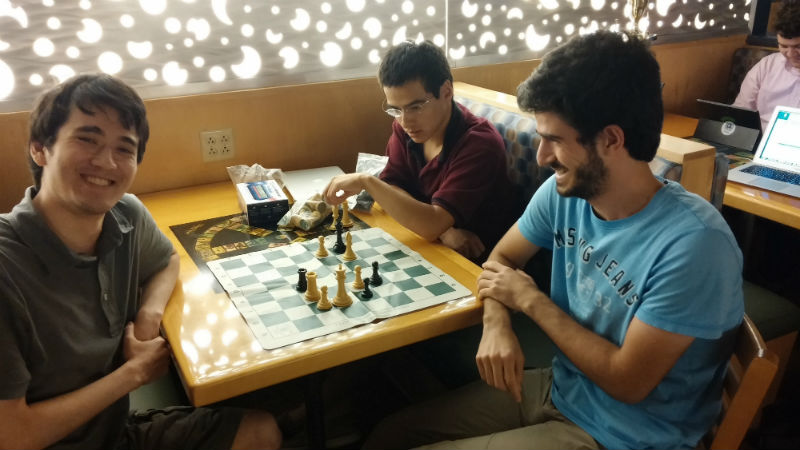

At the beginning of each semester, make sure to check out the Activities Fair! There is truly something
for everyone at WashU. And if you see something lacking, try starting your own club.

Chess Club
Athletics
Exercise should be a part of your schedule, in one form or another. When freshman start feeling overwhelmed with the level
of coursework, exercise is often the first thing to go. Don't let this happen to you! Exercise is improtant for both physical
and mental health. Ever heard of endorphins?
What kinds of sports teams can I join?
There are essentially three types of sports teams available to WashU students:
- Varsity Sports Teams: WashU is a Division III school.
Consider joining a sports team if you are fairly serious about the sport and willing to make a significant time commitment.
- Club Sports: You'll still get to compete
with other schools, but much less of a time commitment than varsity sports
- Intrameural Sports: Anyone at WashU can join/form
an intrameural team. Very low time commitment
What are some other options besides sports teams?
- South Forty Fitness Center:
The south forty gym is conveniently located right above Bears Den. They offer a number of fitness courses such as yoga and cycling for students.
- Athletic Complex: Workout at the AC weight room or swim laps at the pool.
The AC also offers some classes.
*note: classes are not typically free
Pre-Medical
Medical schools aren't necessarily looking for the students with the most medically related activities. As an applicant to medical school, you
will be asked to show leadership skills, commitment to service, and commitment to medicine.
What are some of the most popular student groups for clinical experiences?
- Emergency Support Team (EST): Essentially work as an EMT that caters
exclusively to WashU students. Considerable time commitment.
- Synapse: Organizes physician shadowing as well as
outreach and educational programs
- Pre-Medical Society: Offers advice to pre-med students
including information on clinical experiences within the community.
What are some good service opportunities at WashU?
Cultural Groups
If you are having trouble relating to other students, consider joining a cultural student group.
Here are some examples:
- Russian Club
- Asian American Association
- Turkish Students Association
- Iranian Cultural Society
- Japan Peer Network